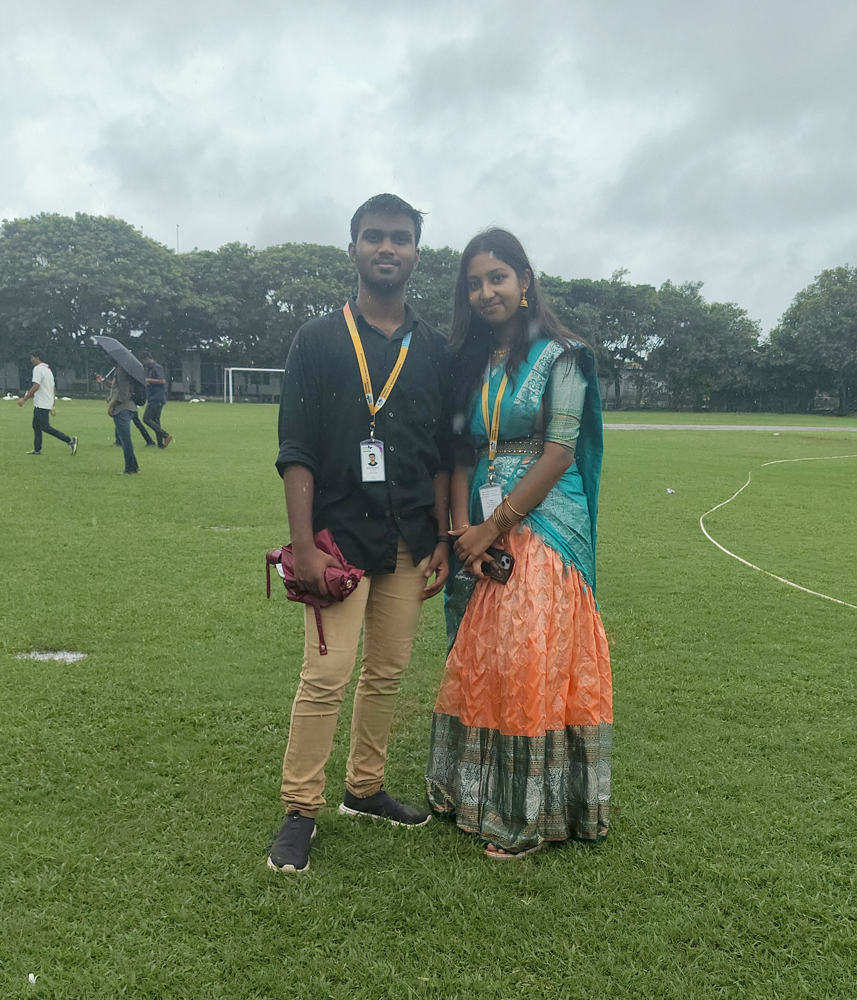
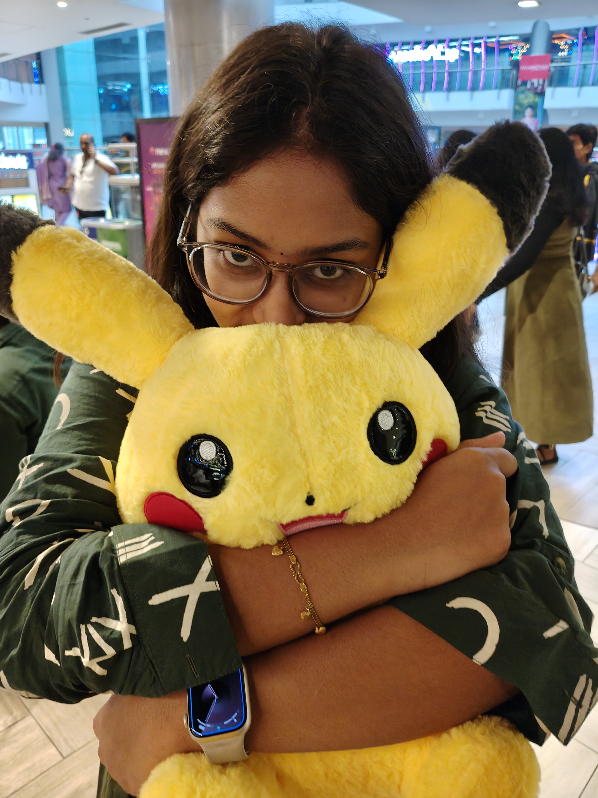
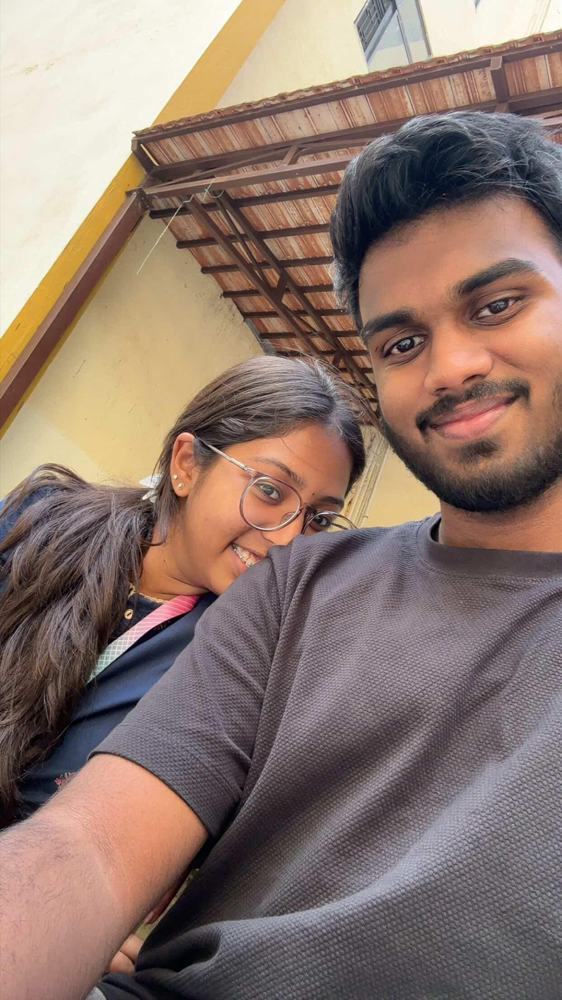

this is where it all started from 🫶🫶🫶 we started to talk a lot after this incident❤️❤️❤️
this phase where we were just friends but genuinely cared for each other
we spent a lot of time on gmeet solving leetcode problems together doing other academic work🫶🫶🫶🫶
once in a week but suddenly we started to get close to each other and sitting in the meet together increased a lot
talking laughing it was just a good phase in my lifeeee ❤️❤️❤️❤️❤️
endless chatting and walking together to sdee was just so memorable💕💕💕💕💕
we went to lunch together the point when we started to sit together for lunch ditching our friends
you unexpectedly got so close to me day by day without even realising I started to like you
and wanted to help you and care for you a lot showing care back then was on a low level but genuinely I cared for you a lot
but I did not express it I am so sorry for that......😭😭😭😭😭🫶🫶🫶🫶🫶🫶
eventually i realised i started to like you aa lott and i cared for you soo muchh
i never wanted to hurt you any way.... thee week where the theatron and televerse
took place... that week i started to fall for you moree...from the previous week we started to
have a lot of conversation... during televerse you came in a blue sleeveless dress with white shirt
on it... it was just soo damnn goodd ❤️❤️❤️❤️❤️❤️ sorryy for complimentingg you... but i was admiring you aa lot
that wholee day you spent time with mee🫶🫶🫶🫶🫶...... and the previous day of theatron we sat in the gmeet doing
our record work for wde and talking to each otherr....soo beatifull momentss with youu...... and during theatron you were
with mee the wholee timee and asked me to sit beside mee 🫶🫶🫶🫶🫶 whilee going you ingnored mee for i got soo sadd
and also got a dry reply when i meassaged you after baording my bus... its the point when i realised it wass soo hurting
when you stopped talking to me... i usually feel this way ony with people whom i gott soo emotionally connecteddd with...
night when you called mee around 9pm i was sooo damn happyyy...🫶🫶🫶🫶

Nov 15… this day holds a lot of emotions and happiness in my heart. Confessing to you on this day was totally unplanned. It was just a casual hangout with our classmates. When I saw you in the mall my heart dropped for a second The previous night I had wished that we would sit together in the theatre and we actually did. WE SAT TOGETHER ❤️❤️❤️❤️❤️.
Just sitting next to you itself gave me so much happiness. I can’t even express it properly. The moment you started holding my hand, it was a complete butterfly moment. My heart started beating faster when you asked what was happening between us. I’m still not sure where I got the courage to say that I liked you. I was afraid of losing you—losing our bond.
the moment you said you liked me back ❤️❤️❤️❤️😭😭😭🫶🫶🫶🫶, even though I may not have shown any reaction, I was so happy. It was a completely new feeling for me. That was the day it officially became us.
I confessed around 2 PM. I can still clearly see those moments. Only 30 minutes were left for the movie to end. I wished I could sit next to you, holding your hand like that, for a long time. Playing with you in Fun City was also one of the happiest moments of that day. Even though we played only 2–3 times together, I was almost next to you the entire time.
cute reactions with your Pikachu will always stay in my heart. Those were my first-ever favourite pictures of yours. I lost count of how many times I looked at that picture. Full ah katti pudichite irundha un Pikachuu vaaaaa.
In the end, it was time to leave. I really didn’t feel like sending you off. It got late, and you were so scared. Even I got upset seeing you in that condition. But when I heard that you reached home safely and that your father didn’t scold you, I was relieved and happy.
It’s officially us… after that, it was just pure caring for each other.
I came to college just because of you.
You grabbed my whole attention 🫶🫶🫶🫶
I was constantly looking at you in class, admiring you all the time.
I left feeling so happy and blessed to have such a caring person like you in my life.
I can’t forget the UPC week every day we used to talk in the evening and sit on Google Meet to study, but we always ended up talking and laughing together.
While writing the test, I was constantly looking at you, and the moment you looked back into my eyes… it was a feeling I can’t explain in words.
The first kiss you gave me in the hut I didn’t even expect it.
That whole day you looked so good, especially in that pink dress.
During the break, near tea time, when you held my hand and you were shivering — your reaction was so cute and sweet ❤️❤️❤️❤️
I just kept looking at your face and your eyes…

The practical week went so well every day ❤️❤️❤️💕💕💕
Except for the first day… I’m so sorry for hurting you 😭😭😭😭
I still regret behaving that way. I truly, wholeheartedly say this I won’t behave like that again.
We spent so much time holding hands together ❤️❤️❤️❤️🫶🫶🫶
Our small talks, our romance, your unexpected kisses everything made my days so much better.
December 13th… this day holds a very special place in my heart 💕💕💕
The reaction you gave when you saw me on the bus 🫠🫠🫠🫠🫠 I felt so happy.
Unnaa happy ah vechikka dhaan vandhenn 🫶🫶🫶🫶
I missed you so much when you left to write your exam.
From 12 onwards, the whole time you were with me 🫶 playing, talking with each other.
My most favourite part was when we played badminton ❤️❤️❤️
I always wished to play a game with you, and it finally got fulfilled. I felt so happy 🫶🫶🫶
Our bus journey… damn, it went so well.
Tightly hugging each other and giving kisses here and there — it was just magical ❤️❤️❤️❤️❤️
And our first kiss 🫶🫶🫶
It was unplanned, yet so beautiful. I can still see it clearly in front of my eyes.
Your cute reaction after kissing me 🫶🫶🫶❤️❤️❤️❤️ everything melted my heart.
I didn’t want to leave… your stop came too early.
Ipdi idhee maari un kai ah pudichitu bus la rombaa dhooram travel panni ponum nu iruku 🫶🫶🫶
One day, it will happen for sure.
I’m just waiting for that day ❤️❤️❤️💕💕💕
This whole month wass soo memorable💕💕💕💕💕 though we have only few pictures together
but we holdd a lot of memoriess in heart...🫶🫶🫶🫶🫶 i havee not mentioned many moments and memories
here... but everything trueely stays in my heart.... ill alwayss lovee you babeeeeeee💕💕❤️
inimell unnagaa ellamee pannanum nu iruku ennaku... unnaa avlo pudikum ennaku.❤️❤️❤️❤️🫶🫶🫶
i lovee youu sooo muchh babee❤️❤️❤️❤️❤️. im soo attached to youuu diii🫶🫶🫶....
epoyumee en kudaveee iruuu thangooo❤️❤️❤️...idhu varaikum naa edachum unna hurt pannirundhaa im sooo soo sorryyyy...
unkudaa oru beatifull lifee lead pannanum nu irukuu❤️❤️ and i promise ill start hard and keep you veryy happyy in the upcoming yearss❤️❤️❤️❤️❤️
un melaa irukuraa lovee epoyumee koraiyaadhu chellooo... infact ennaku eriteee podhuu❤️❤️❤️
ill alwayss loveee you dii...ill lovee you forever❤️❤️❤️❤️❤️